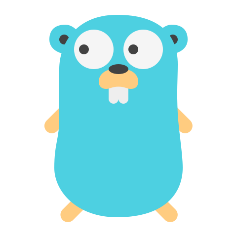
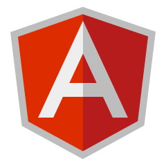
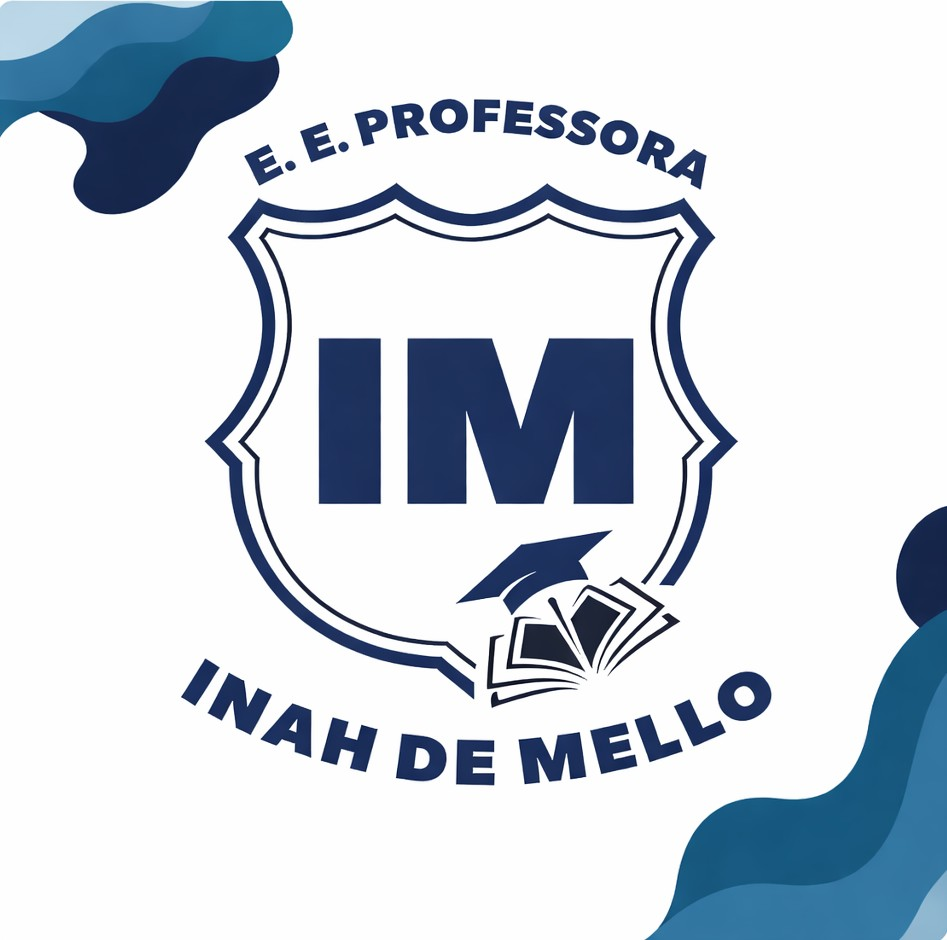
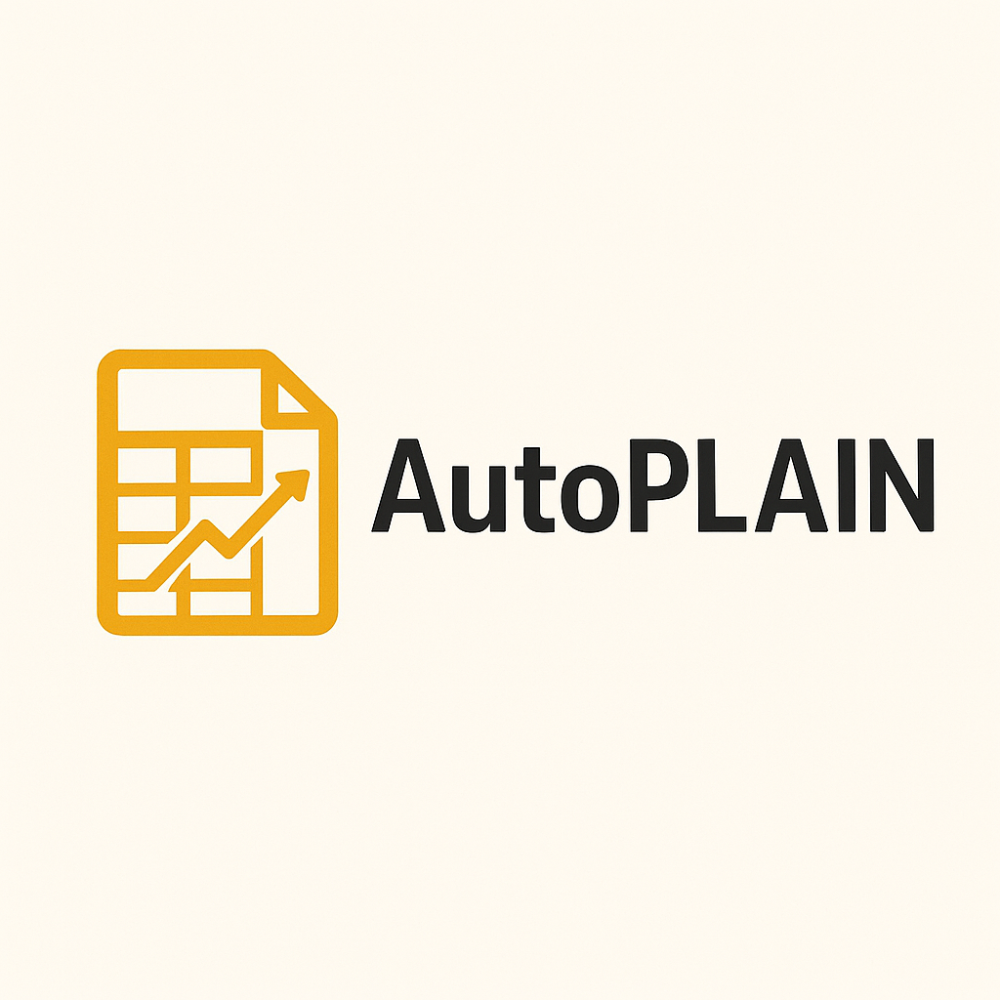

C#
C#
 Node
Node

GO
PostgreSQL
MongoDB
Desenvolvedor Full-Stack (.NET Core & Angular) Técnico em Desenv. de Sistemas | C# | Node | GO & SQL
Formado como Técnico em Desenvolvimento de Sistemas e atualmente graduando em Engenharia de Software, uno o conhecimento prático da base técnica com uma visão arquitetural sólida. Possuo experiência no desenvolvimento de aplicações ponta a ponta, com foco principal no ecossistema .NET (C#) e Angular.
C#
Node

GO
Angular HTML5
HTML5
 CSS3
CSS3
 JavaScript
JavaScript
/ educação
Acadêmica
Complementar
/ portfólio
API ASP.NET Core (.NET 10.0) com autenticação JWT e gerenciamento completo de alunos, diretores, livros e agendamentos de empréstimos.
Ver no GitHub →
TCC Técnico: ferramenta em Python com machine learning para análise inteligente de planilhas e geração automática de insights e relatórios.
Ver no GitHub →
Sistema de gestão de casamentos 100% responsivo e offline. Lista de presentes, PIX direto e dashboard automático para o casal.
Ver no GitHub →